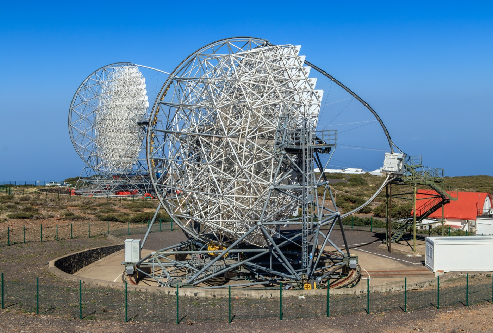
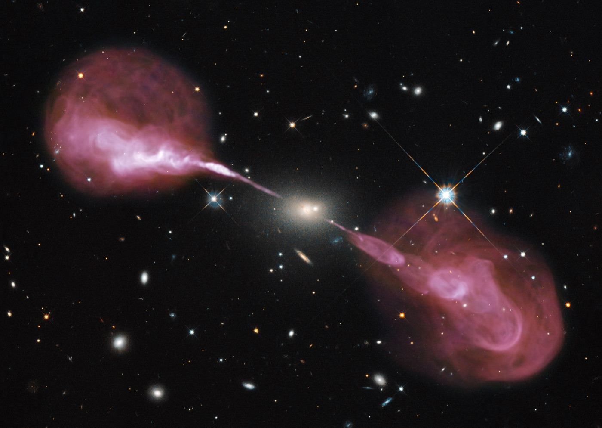

Executive Summary
지상에서 초고에너지 감마선을 잡는 방법은 하늘을 직접 보는 것이 아닙니다. 감마선이 대기와 부딪혀 만드는 나노초짜리 체렌코프 섬광을 큰 거울로 모아 카메라로 찍습니다. 이 분야가 성능을 올려 온 방법은 40년 동안 하나였습니다. 거울을 더 크게 만드는 것입니다. 막스플랑크 물리학연구소와 뮌헨공대 연구진은 거울 대신 그 앞단의 데이터 처리 규칙을 건드렸습니다.
지름 5미터짜리 작은 망원경을 시뮬레이션해 놓고, 사건 하나를 25.6나노초 길이의 짧은 동영상으로 취급해 비디오 비전 트랜스포머에 통째로 넣었습니다. 캘리브레이션도 클리닝도 파라미터화도 거치지 않았습니다. 같은 시뮬레이션 사건에 표준 분석을 최적화해 적용한 결과와 비교했을 때 검출 문턱은 0.22 TeV에서 0.07 TeV로 내려갔습니다. 다만 에너지 분해능처럼 두 분석이 겹치는 구간의 지표에서는 표준 분석이 여전히 앞섭니다.
이 결과는 실제 망원경 관측이 아니라 이상화된 가상 망원경의 몬테카를로 시뮬레이션에서 나왔습니다. 저자들 스스로 절대 수치는 상한이라고 적었습니다. 이 글은 그 조건을 지킨 채, 성능 한계가 하드웨어가 아니라 40년간 의심받지 않은 앞단 처리 규칙에 있었다는 주장을 어디까지 읽을 수 있는지를 봅니다.
주요 수치
출처: Jobst 외(2026), arXiv:2608.31148 Table 5 · §1
0.22 → 0.07 TeV
에너지 검출 문턱
같은 시뮬레이션 사건에 두 분석을 적용한 비교, 3.1배 감소
3.3배
유효 집광면적
0.2 TeV에서 0.32에서 1.05×10⁵ m²로, 거울 크기는 그대로
46만 → 약 10
사건당 살아남는 값
표준 파이프라인이 재구성 단계에 넘기는 값의 개수
0.28 vs 0.32
에너지 분해능 열세
0.2 TeV에서는 표준 분석이 더 정확, 값이 낮을수록 좋음
광자 수십 개가 남긴 것을 클리닝이 지운다
초고에너지 감마선은 지상에 닿기 전에 대기에 흡수됩니다. 그래서 대기 체렌코프 영상 망원경(IACT)은 감마선 자체가 아니라 그것이 대기에서 일으킨 입자 소나기를 봅니다. 소나기 속 하전입자들이 앞쪽으로 좁게 뿜는 체렌코프 빛은 몇 나노초 동안 반짝이고, 지상에서 반경 120미터쯤 되는 빛 웅덩이를 만듭니다. 큰 분할 거울이 그 빛을 모아 시간 분해능이 높은 픽셀 카메라에 맺히게 합니다. 1980년대 후반 크랩성운 검출로 성숙한 이 기술로 지금까지 220개가 넘는 초고에너지 천체가 확인됐습니다.
카메라에 맺힌 소나기는 픽셀당 광자 몇 개짜리의 길쭉한 타원으로 나타납니다. 이 타원의 방향과 모양, 밝기에 감마선의 방향과 에너지가 담겨 있고, 감마선보다 1만 배 많은 하드론 우주선이 만든 소나기와 구별할 단서도 여기 있습니다. 게다가 이 신호의 주된 방해물은 전자 잡음이 아니라 밤하늘 자체입니다. 분해되지 않은 별빛과 대기광, 산란광이 만드는 밤하늘 배경광이 계속 카메라에 들어옵니다.
그래서 표준 분석의 첫 임무는 신호와 배경을 가르는 일입니다. 픽셀마다 기록된 파형은 전하량과 도달 시각 두 값으로 줄어듭니다. 그다음 밤하늘 배경광이 지배한다고 판정된 픽셀을 0으로 지우는 클리닝을 거칩니다. 살아남은 픽셀은 길이와 폭, 크기, 중심, 방향 같은 소수의 변수로 요약되고, 랜덤포레스트가 그 변수만 보고 에너지와 방향과 입자 종류를 추정합니다. 논문의 표현으로 이 파이프라인은 높은 압축률 위에 서 있습니다. 픽셀 수천 개를 몇 GHz로 샘플링하는 현대 카메라는 사건 하나에 10만 개 안팎의 값을 남기는데, 힐라스 파라미터화가 그중 남기는 것은 열 개 남짓입니다.
밝은 사건에서는 이 압축이 합리적입니다. 이미지가 크고 또렷하고 기하학적으로 단순하니 열 개의 변수로 충분히 담깁니다. 문제는 에너지가 낮은 쪽입니다. 이미지는 희미해지고 광전자 수십 개가 픽셀 몇 개에 흩어집니다. 클리닝은 신호 대부분을 배경과 함께 지우고, 남은 픽셀로는 안정적인 파라미터화가 불가능해집니다. 논문 서론이 이 대목을 이렇게 정리합니다.
"The low-energy performance of an IACT is therefore not just determined by the physical mirror collection area, but also by the capabilities of the analysis chain to efficiently use all recorded information."
저에너지 성능은 물리적 거울 면적만으로 정해지지 않고, 기록된 정보를 얼마나 효율적으로 쓰는지에도 달려 있다는 문장입니다. 여기서 문제가 하드웨어에서 분석으로 옮겨 갑니다.
1985년에 멈춘 첫 단계, 거울을 키워 온 40년
이 파이프라인의 뒷단은 그동안 꾸준히 바뀌었습니다. 정적인 품질 컷이 동적인 컷으로 바뀌었고, 사건 분류에 쓰이던 랜덤포레스트와 부스팅 트리는 신경망으로 갈아탔습니다. 바뀌지 않은 것은 앞단입니다. 논문은 저수준 처리가 1985년 힐라스가 도입한 이미지 파라미터화 이래 본질적으로 그대로라고 적습니다. 2026년 기준으로 41년째이고, 초록의 표현으로는 네 개의 십년입니다.
앞단을 건드려 본 시도가 없었던 것은 아닙니다. 논문이 정리한 선행 연구들은 대부분 표준 체인의 어느 한 단계를 딥러닝으로 갈아 끼우는 방식이었고, 입력으로는 캘리브레이션과 클리닝을 마친 이미지를 썼습니다. 클리닝이 성능에 얼마나 영향을 주는지를 정면으로 물은 연구도 이미 나와 있습니다. 최근에는 CTAO LST-1의 픽셀 파형에 잔차 CNN을 직접 적용해 시간 구조가 신경망에 쓸모 있다는 것을 보인 연구도 있었습니다. 다만 그 파형도 캘리브레이션을 거친 것이었고 표준 클리닝 마스크는 그대로 적용됐으며, 저자들 스스로 계산 비용이 너무 커서 일상 분석 체인을 대체할 후보로 제안하기는 어렵다고 적었습니다. 그래서 이 논문이 자기 몫으로 주장하는 새로움은 두 가지로 좁혀집니다. IACT 자료에 트랜스포머를 적용한 첫 사례라는 것, 그리고 캘리브레이션도 클리닝도 걸치지 않은 원자료 큐브 위에서 재구성을 수행한 첫 사례라는 것입니다.
그동안 성능을 올리는 방법은 반사경을 키우는 쪽이었습니다. 위플의 10미터에서 매직의 17미터로, 다시 H.E.S.S.의 28미터와 CTAO 대형망원경(LST)의 23미터로 커졌습니다. 여러 대를 세워 같은 소나기를 여러 각도에서 보는 스테레오 관측도 함께 자리 잡았습니다. 성능은 올라갔지만 비용도 함께 올라갔습니다. 논문에 따르면 IACT의 비용은 경험적으로 거울 지름의 약 세제곱에 비례합니다. 지름을 두 배로 하면 비용은 여덟 배가 된다는 뜻입니다.
큰 망원경에는 다른 부담도 따라옵니다. 거대한 장비를 돔 안에 넣는 것은 경제적으로 현실적이지 않아서, 지금의 IACT들은 바람과 습기, 주기적인 비와 먼지와 눈, 이따금 날아오는 화산재에 그대로 노출된 채 서 있습니다. 그만큼 광학 투과율이 떨어지고 성능도 함께 깎입니다.

40년 동안 아무도 앞단을 의심하지 않은 이유는 그 규칙이 틀려서가 아닙니다. 밝은 사건이 기준이던 시절에는 맞는 규칙이었습니다. 규칙이 만들어진 전제가 깨지는 영역, 즉 광자 수십 개짜리 희미한 사건에서만 그 압축이 정보를 파괴합니다. 그리고 작은 망원경이 늘 부딪히던 벽이 정확히 그 영역입니다.
사건 하나를 25.6나노초짜리 동영상으로 넣었다
연구진은 실제 망원경을 쓰는 대신 작은 가상 망원경(Small Virtual Telescope, SVT)을 설계해 시뮬레이션했습니다. 지름 5미터 포물면 반사경에 60×60 픽셀 사각 카메라를 얹고, 시야 6.1도, 픽셀 하나가 0.1도를 보는 단독 망원경입니다. 관측 지점은 라팔마의 CTAO 북부 관측소 자리, 고도 2,200미터로 잡았습니다. 판독계는 5 GHz로 128 샘플을 기록하니 사건 하나가 25.6나노초짜리 동영상이 됩니다. 트리거는 5×5 픽셀 구역의 아날로그 합이 광전자 10개를 넘을 때 걸리도록 했고, 픽셀당 밤하늘 배경광은 0.15 GHz로 넣었습니다.
이 동영상의 크기가 128×60×60, 값으로 46만 800개입니다. 트랜스포머 분석은 이 텐서를 전체 데이터셋의 최빈 픽셀 전하로 정규화하는 것 외에 아무 처리도 하지 않고 그대로 신경망에 넣습니다. 캘리브레이션도, 클리닝도, 페데스탈 차감도, 파라미터화도 없습니다.
3.1왜 비디오 트랜스포머였나
어텐션으로 오기 전에 다른 후보들을 같은 자료로 구현해 비교했습니다. 가장 먼저 떠오르는 합성곱 신경망은 국소성 가정이 강합니다. 커널 안에서 상관을 배우고 먼 거리의 구조는 층을 쌓아 올려야 잡히는데, 소나기 이미지는 국소적인 대상이 아니라 머리와 꼬리가 강하게 묶여 있습니다. 고정된 3차원 커널이 시간 축을 공간 축과 똑같이 다루고, 입력 크기가 바뀌면 그대로 쓸 수 없다는 점도 걸렸습니다. 카메라 배치 자체를 나중에 설계 변수로 놓고 최적화할 생각이었기 때문입니다. 순환 신경망은 시퀀스를 자연스럽게 다루지만 망각 게이트 때문에 긴 시퀀스에서 정보를 잃습니다. 쓸모 있는 구조가 128 프레임 어디에 있을지 모르는 상황에서는 불리합니다. 그래프 신경망은 아이스큐브처럼 검출기 기하가 불규칙할 때 강한데, SVT는 사각 픽셀에 죽은 채널도 없고 커버리지도 완전해서 그 유연성이 필요 없었습니다. 어텐션은 토큰 전체를 한꺼번에 처리하니 먼 거리 상관이 모든 층에 살아 있고, 토큰으로 만들 수 있는 입력이면 무엇이든 받으므로 카메라 배치가 바뀌어도 구조를 그대로 씁니다.
시간 축이 있는 자료라 이미지용 비전 트랜스포머를 그대로 쓸 수 없습니다. 연구진은 동영상을 20×20 픽셀에 2 프레임짜리 3차원 조각(튜블릿)으로 쪼개 3차원 합성곱으로 임베딩했습니다. 프레임을 따로 뽑아 이어 붙이면 시간 상관이 깨지는데, 튜블릿은 시공간 구조를 보존합니다.
구조는 두 가지 후보를 실제로 돌려 보고 골랐습니다. 시공간 어텐션을 한꺼번에 거는 ViViT-ST는 표현력이 가장 크지만 128 프레임 동영상에서는 비용이 토큰 수의 제곱으로 늘어납니다. 인수분해 인코더인 ViViT-FE는 공간 인코더가 프레임마다 따로 작동해 프레임당 토큰 하나를 만들고, 시간 인코더가 그 토큰들의 변화를 학습합니다. 동일 데이터로 다섯 에포크를 돌린 결과 분류 정확도는 80.78%와 80.34%로 0.5%포인트 이내였고, H200 GPU 한 장 기준 에너지 회귀 학습 시간은 1일 19시간 58분과 7시간 39분이었습니다. 정확도 차이가 거의 없는데 비용이 5.7배 차이 나서 인수분해 쪽을 택했습니다. 합성곱·순환 계열 베이스라인과의 폭넓은 비교, 그리고 시간 정보가 실제로 쓰이고 있는지 확인하는 단일 프레임 대조 실험은 별도 문헌으로 보고했습니다.
마지막 토큰은 네 개짜리 출력을 내는 선형 헤드로 이어집니다. 에너지, 카메라 평면상의 좌표 두 개, 그리고 입자 종류 로짓입니다. 회귀와 분류는 손실 크기가 자릿수로 다르기 때문에, 연구진은 각 손실의 그래디언트를 크기 1로 정규화해 하나의 복합 손실로 묶었습니다. 하나의 망이 분류와 에너지 회귀와 방향 회귀를 동시에 수행합니다.
3.2비교 대상은 실전 파이프라인이다
비교의 무게는 베이스라인에 달려 있습니다. 연구진은 CTAO LST-1이 실제로 쓰는 분석 체인을 lstchain v0.10.5로 구현한 뒤, 캘리브레이션 적분창부터 클리닝 문턱과 랜덤포레스트 설정까지 모든 단계를 SVT에 맞춰 다시 최적화했습니다. optuna의 트리 구조 파젠 추정기로 단계마다 150회씩 탐색했습니다. 대충 만든 허수아비가 아니라, 현재 모든 IACT에서 일상적으로 돌아가는 체인을 이 망원경에 맞게 최대한 조율한 상태와 겨룬 것입니다.
같은 시뮬레이션 사건에 두 분석을 적용한 결과, 가장 크게 벌어진 것은 사건을 재구성할 수 있느냐를 가르는 지표였습니다. 에너지 검출 문턱은 0.22 TeV에서 0.07 TeV로 3.1배 내려갔고, 방향을 재구성할 수 있는 가장 낮은 에너지는 0.2 TeV에서 0.05 TeV로 네 배 내려갔습니다. 유효 집광면적은 0.2 TeV에서 0.32×10⁵ m²에서 1.05×10⁵ m²로 3.3배가 됐습니다. 0.05 TeV에서는 0.003×10⁵ m²에서 0.24×10⁵ m²로 80배가 되는데, 논문은 이를 두 자릿수에 가까운 증가라고 적었습니다. 1 TeV로 올라가면 두 곡선이 만나면서 차이가 1.3배까지 좁혀집니다. 트리거와 검출기 기하와 입력 사건이 두 분석에서 동일하므로, 이 차이는 표준 분석이 클리닝과 품질 컷에서 버리는 사건을 트랜스포머가 살려 내면서 생깁니다.
감마선과 하드론을 가르는 성능도 낮은 에너지에서 벌어집니다. ROC 곡선 아래 면적은 에너지가 높아 두 분석 모두 신호가 충분한 구간에서는 0.94와 0.99로 수렴하지만, 낮은 구간으로 내려갈수록 격차가 커집니다.
면적 수치보다 분명한 것은 분류기 점수 분포입니다. 표준 분석에서는 감마선과 양성자의 감마니스 분포가 높은 에너지 구간에서만 갈라지고, 0.27 TeV 아래로 내려가면 둘이 거의 포개집니다. 두 종류 모두 낮은 감마니스 쪽에 쌓이는데, 클리닝을 거친 뒤 분류기에게 남은 판별 정보가 거의 없다는 뜻입니다. 트랜스포머 쪽은 0.27 TeV 아래에서도 분리가 유지되고 0.13 TeV 아래에서도 알아볼 만한 차이가 남습니다.
재구성이 어떻게 무너지는지는 에너지 이행 행렬에서 더 뚜렷합니다. 표준 분석은 실제 에너지가 0.1 TeV보다 훨씬 낮은 사건도 거의 재구성하지 못합니다. 그 사건들이 망원경을 작동시켰는데도 클리닝에서 지워지거나, 살아남아도 픽셀이 너무 적어 안정적인 파라미터화가 되지 않기 때문입니다. 그 결과 이행 행렬은 재구성 에너지 0.1에서 0.2 TeV 부근에 가로 띠를 만듭니다. 실제 에너지가 100배까지 차이 나는 사건들이 한 칸에 쌓인다는 뜻입니다. 트랜스포머의 행렬은 수십 GeV까지 대각선을 따라갑니다.
저자들이 이 결과를 중요하게 보는 이유는 개선이 일어난 자리에 있습니다. 감마선 폭발이나 활동은하핵의 플레어처럼 짧게 변하는 현상은 0.5 TeV 아래에서 가장 밝고 가장 많이 나타납니다. 작은 망원경의 표준 분석이 무너지는 구간이 정확히 거기입니다.
이 수치가 말하지 않는 것
여기까지 읽고 작은 망원경이 실제로 커졌다고 옮기면 과장입니다. SVT는 존재하는 장비가 아니라 일부러 단순하고 이상적으로 설계한 가상 망원경입니다. 거울 반사율 100%, 260에서 650나노미터 구간 양자효율 100%, 완벽한 거울 정렬, 전이시간 퍼짐 0, 반치폭 1나노초짜리 단일 광전자 펄스를 가정했습니다. 저자들은 그래서 여기 실린 절대 수치가 상한이라고 §7에 직접 적었습니다.
이 논문이 지키려는 것은 절대값이 아니라 비율입니다. 같은 이상화가 두 분석에 똑같이 적용되므로 둘의 비가 이 논문의 주장이고, 그 비는 이상화에 견딘다는 것입니다. 첫 확인으로 양자효율을 절반으로 낮춰 봤더니 성능은 광자 수가 줄어든 만큼 에너지 축을 따라 이동했고 트랜스포머의 상대적 우위는 유지됐습니다. 오히려 트랜스포머 쪽이 변화에 덜 민감했는데, 클리닝 문턱이 광자 수확량에 묶여 있는 단계를 아예 쓰지 않기 때문입니다. 현실적인 광학과 파장 의존 양자효율, 전자 잡음까지 넣는 체계적 연구는 후속 논문의 몫으로 남았습니다.
트랜스포머가 모든 칸에서 이긴 것도 아닙니다. 두 분석이 함께 측정되는 구간에서 에너지 분해능은 표준 분석이 더 좋습니다. 방향 분해능도 1 TeV에서는 표준 분석이 근소하게 앞섭니다.
다만 그 열세는 구간마다 다릅니다. 0.3 TeV 부근에서는 두 곡선이 거의 붙고, 벌어지기 시작하는 것은 0.5 TeV 위쪽입니다. 반대로 트랜스포머만 값이 존재하는 가장 낮은 구간에서는 에너지 분해능이 48% 수준까지 내려앉습니다. 표준 분석이 아무것도 재구성하지 못하는 자리를 채우기는 하되, 그 자리에서 재는 에너지는 정밀하지 않다는 뜻입니다.
| 지표 | 표준 분석 | 트랜스포머 분석 |
|---|---|---|
| 에너지 검출 문턱 | 0.22 TeV | 0.07 TeV |
| 방향 재구성 최저 에너지 | 0.2 TeV | 0.05 TeV |
| 에너지 분해능 (0.2 TeV) | 0.28 | 0.32 |
| 에너지 분해능 (1 TeV) | 0.18 | 0.24 |
| 에너지 분위비 (1 TeV) | 5.9 | 2.7 |
| 방향 분해능 (1 TeV) | 0.10° | 0.11° |
| 방향 분위비 (0.2 TeV) | 2.7 | 1.7 |
| 유효 집광면적 (0.05 TeV) | 0.003×10⁵ m² | 0.24×10⁵ m² |
▲ 동일 시뮬레이션 사건에 두 분석을 적용한 비교 | 분해능은 68% 포함 구간, 분위비는 95%와 68% 포함 구간의 비로 가우시안이면 2입니다. 출처: Jobst 외(2026) Table 5, arXiv:2608.31148
저자들은 이 열세를 복합 손실 설계의 대가로 설명합니다. 에너지와 방향 두 좌표의 회귀, 그리고 분류를 하나의 손실로 묶다 보니 어느 하나도 단독 최적화만큼은 되지 않았다는 것입니다. 이번 결과에서는 회귀 항의 가중치를 1로 두었는데, 학습 사건의 절반만 감마선이라 회귀 항에 마스크가 걸리는 구조여서 결과적으로 분류 쪽에 두 배의 실효 가중치가 실렸습니다. 회귀 항의 가중치를 높이거나 에너지 전용 헤드를 따로 두는 것이 남은 격차를 좁히는 가장 직접적인 길이라고 스스로 적었습니다. 모델 하이퍼파라미터도 훑어봤을 뿐 완전히 최적화하지 않았다고 밝힙니다.
분위비 열은 반대 방향을 가리킵니다. 1 TeV에서 에너지 오차의 95% 대 68% 포함 구간 비는 표준 5.9, 트랜스포머 2.7입니다. 가우시안이면 2가 나오는 값이니, 표준 분석의 오차 분포에는 긴 꼬리가 달려 있고 트랜스포머 쪽은 거의 정규분포에 가깝다는 뜻입니다. 평균적인 정확도에서는 밀리면서 크게 틀리는 경우는 훨씬 적습니다.
가장 낮은 에너지에 남아 있는 벽은 밤하늘 배경광입니다. 0.1 TeV 아래에서는 카메라에 들어오는 배경광 광자의 분포가 신호 분포와 상당 부분 겹치고, 파형에 단순한 문턱을 걸어서는 갈라지지 않습니다. 저자들은 재구성 신경망 앞에 학습된 잡음 제거기를, 이를테면 확산 모델이나 트랜스포머 계열을 붙이는 방안을 다음 개선 후보로 듭니다.
문턱 0.07 TeV라는 값 자체도 보수적으로 잡힌 숫자입니다. 가장 낮은 에너지에서는 살아남은 양성자 배경이 시뮬레이션 통계의 푸아송 요동에 지배돼서, 구간마다 컷을 최적화하는 대신 감마니스 0.9라는 고정된 엄격한 컷을 걸었기 때문입니다. 그리고 실제 관측 자료에 적용하려면 시뮬레이션과 실데이터의 불일치라는, 시뮬레이션으로 학습하는 모든 IACT 분석이 안고 있는 문제를 넘어야 합니다. 저자들은 도메인 적응 기법과 함께, 작은 망원경은 돔에 넣어 광학 투과율을 안정시킬 수 있다는 점을 해법 후보로 듭니다.
같은 날 나온 두 편이 함께 고른 것
같은 날 arXiv에 올라온 제네바대학교 연구진의 전파 천문학 논문도 결이 비슷합니다. 자연 이미지로 사전학습한 대형 비전 파운데이션 모델의 표현은 천문 이미지에도 쓸 만하고 모델이 커질수록 성능이 오르지만, 그만큼 추론 비용이 붙습니다. 연구진은 반대쪽을 시험했습니다. 라벨 없는 전파은하 이미지 2만 장으로 600만 파라미터짜리 작은 모델을 자기지도 학습시킨 것입니다.
학습 목적함수로는 얀 르쿤과 랜들 발레스트리에로가 2025년에 낸 LeJEPA를 썼고, 같은 크기의 백본에 SimCLR과 BYOL을 얹은 판본을 비교군으로 뒀습니다. 세 개의 공개 분류 데이터셋에서 파인튜닝 F1을 재니 LeJEPA 쪽이 0.72, 0.77, 0.96으로, 3.7배 큰 2,200만 파라미터 모델의 0.71, 0.74, 0.93과 비슷하거나 조금 높았습니다. 같은 6백만 크기의 SimCLR과 BYOL은 세 데이터셋 모두에서 뒤졌습니다.

읽을 때 두 가지를 함께 봐야 합니다. 비교 대상인 2,200만 파라미터 모델은 그 자체로 더 큰 교사 모델에서 증류된 것이라, 수십억 파라미터급 초대형 모델과 직접 겨룬 실험이 아닙니다. 그리고 백본을 얼려 두고 선형 분류기만 얹은 조건에서는 순위가 흔들립니다. 같은 LeJEPA라도 EfficientNet 기반이 여러 데이터셋에서 더 좋았습니다. 무엇보다 이 논문은 NeurIPS 워크숍에 낸 네 쪽짜리 짧은 보고서라, 스물두 쪽에 표 다섯 개를 실은 감마선 쪽 논문과 증거의 무게가 같지 않습니다. 목적함수 선택이 모델 크기 못지않게 중요하다는 방향 정도로 읽는 편이 맞습니다.
앞단 이야기로 좁히면 두 논문이 같은 자리에 서 있는 것도 아닙니다. 전파 쪽이 사전학습에 쓴 RGZ20k 이미지는 이미지 평균의 3σ에 못 미치는 픽셀을 0으로 만드는 시그마 클리핑을 이미 거친 자료입니다. 감마선 논문이 걷어낸 바로 그 종류의 앞단 규칙이 여기서는 그대로 남아 있습니다.
그래도 두 편이 같은 자리를 가리키는 것은 분명합니다. 한쪽은 거울을 키우는 대신 버리던 원자료를 그대로 읽었고, 다른 쪽은 모델을 키우는 대신 자기 도메인 관측 자료로 표현을 직접 배웠습니다. 둘 다 더 큰 것을 사는 대신 자기 데이터에 맞는 표현을 골랐습니다.
조직의 데이터 파이프라인에서도 같은 구조를 찾을 수 있습니다. 무엇을 집계하고 무엇을 버릴지 정하는 규칙은 대개 그 규칙이 설계되던 시절의 흔하고 신호가 강한 사례를 기준으로 만들어집니다. 힐라스 파라미터화가 밝은 이미지를 전제로 설계된 것과 같습니다. 그리고 그 규칙 아래에서 가장 먼저 사라지는 것은 희귀하거나 신호가 약한 쪽, 즉 분포의 꼬리입니다. 새 모델을 얹기 전에 물어야 할 것은 모델의 성능이 아니라 지금 저장 단계에서 무엇이 이미 지워지고 있는가입니다.
이 질문에 답이 있는 조직만 쓸 수 있는 선택지가 있습니다. 논문 §8은 이 분석의 함의로 두 가지를 듭니다. 새 장비를 트랜스포머 기반 분석에 맞춰 설계하는 것, 그리고 매직과 LST와 ASTRI 같은 기존 장비의 데이터를 다시 분석해 도달 범위를 넓히는 것입니다. 뒤쪽은 원자료를 버리지 않고 남겨 둔 경우에만 가능합니다. 이 블로그가 앞서 다룬 외계행성을 찾던 KMTNet 10년 기록으로 블랙홀을 재는 계산도 같은 구조였습니다. 관측은 이미 끝났고, 새로 생긴 것은 그 기록을 읽는 방법이었습니다.
논문이 그 뒤에 그리는 그림은 망원경 한 대짜리가 아닙니다. 작은 망원경은 돔에 넣을 수 있고 로봇 운용과 태양광 전원도 가능하니, 경도를 따라 여러 대를 흩어 놓는 배치가 경제적으로 성립합니다. 지금은 한 관측소에서 같은 천체를 하룻밤에 길어야 몇 시간밖에 볼 수 없어서 IACT가 만드는 광도곡선이 밤마다 끊긴 조각으로 남는데, 경도를 따라 놓인 망원경들은 지구가 도는 동안 같은 천체를 이어서 따라갈 수 있습니다. 블레이자와 감마선 폭발과 밀집 천체 병합의 물리가 놓인 몇 시간에서 며칠 규모의 변화를, 전파와 가시광과 엑스선에서는 이미 보는 그 변화를, 초고에너지 대역에서도 보게 된다는 뜻입니다.
이 논문에서 새로운 것은 트랜스포머가 아닙니다. 비디오 비전 트랜스포머 자체는 2021년에 제안된 구조입니다. 바뀐 것은 그 모델에 무엇을 입력으로 주느냐였습니다. 40년 동안 요약본만 건네던 자리에 원자료를 그대로 올렸을 때 무엇이 달라지는지를 잰 실험입니다.
Editor's Note
AI-Ready Data를 준비하는 일은 대개 라벨을 붙이고 결측을 메우는 작업으로 이해됩니다. 이 논문은 그보다 앞선 질문 하나를 다시 꺼냅니다. 우리가 저장하기로 정한 형태가 지금 쓰려는 모델에게도 충분한가. 요약 규칙이 만들어질 때의 모델과 지금 쓰려는 모델이 다르다면, 성능 한계는 모델이 아니라 그 규칙에 남아 있을 수 있습니다.
참고문헌
1차 출처
- 1.Jobst, E., Heckmann, L., Heinrich, L., & Paneque, D. (2026). "The Analysis, not the Aperture: End-to-End Transformer Reconstruction for Imaging Atmospheric Cherenkov Telescopes." arXiv:2608.31148.
- 2.Lastufka, E., Drozdova, M., Kinakh, V., Holotyak, T., Dessauges-Zavadsky, M., Schaerer, D., & Voloshynovskiy, S. (2026). "Learning Radio Astronomical Representations with LeJEPA and Very Small Models." arXiv:2608.30594.
방법론 원 출처
- 3.Hillas, A. M. (1985). "Cerenkov light images of EAS produced by primary gamma rays and by nuclei." Proceedings of the 19th International Cosmic Ray Conference (La Jolla), Vol. 3, pp. 445–448.
- 4.Arnab, A., Dehghani, M., Heigold, G., Sun, C., Lučić, M., & Schmid, C. (2021). "ViViT: A Video Vision Transformer." arXiv:2103.15691.
- 5.Balestriero, R. & LeCun, Y. (2025). "LeJEPA: Provable and Scalable Self-Supervised Learning Without the Heuristics." arXiv:2511.08544.
도구·소프트웨어
- 6.Bernlöhr, K. (2008). "Simulation of imaging atmospheric Cherenkov telescopes with CORSIKA and sim_telarray." Astroparticle Physics 30(3), pp. 149–158.
- 7.Akiba, T., Sano, S., Yanase, T., Ohta, T., & Koyama, M. (2019). "Optuna: A Next-generation Hyperparameter Optimization Framework." KDD 2019, pp. 2623–2631.